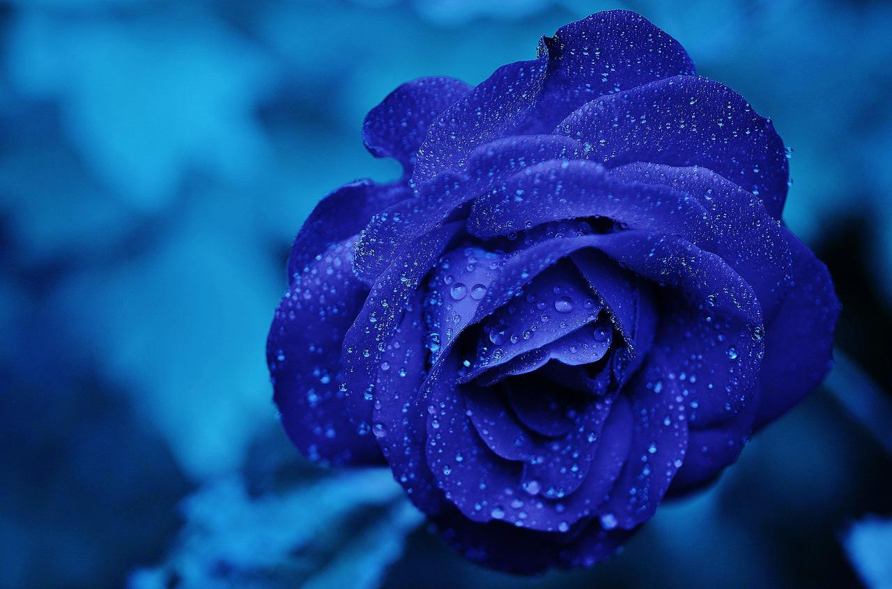

<!DOCTYPE html>
<html lang="en">
  <head>
    <meta charset="UTF-8" />
    <meta name="viewport" content="width=device-width, initial-scale=1.0" />
    <title>Roses</title>
    <link rel="stylesheet" href="picture_element.css" />
    <link rel="shortcut icon" href="images/colorful-rose.jpg" type="image/x-icon">
  </head>
  <body>

    <!-- Task through media query using style.css-->
    <!-- <div>
      <div class="color">
        <h1>"All my base, are belong to you"</h1>
        
      </div>

      <div class="blue">
        <h1>"Violets are #0000FF"</h1>
        
      </div>

      <div class="red">
        <h1>"Roses are #FF0000"</h1>
        
      </div>

    </div> -->
    

    <!-- Bonus task through picture element using picture_element.css -->
    <div>
      <h1></h1>
      <picture>
        <source media="(min-width: 901px)" srcset="images/colorful-rose.jpg 1200w"/>
        <source media="(min-width: 601px) and (max-width: 900px)" srcset="images/blue-rose.jpg"/>
        <source media="(max-width: 600px)" srcset="images/red-rose.jpg"  />
        
      </picture>
    </div>
    

  </body>
</html>
